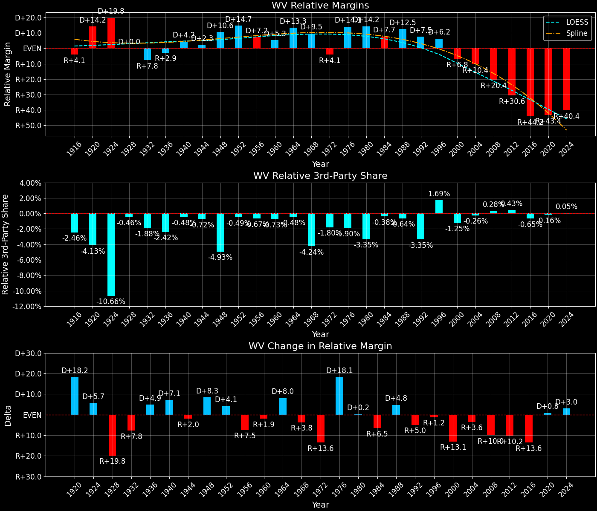

West Virginia (WV) — Statewide

Margins · 3rd-Party share · Pres. deltas

Relative margins · Relative 3rd-Party · Rel. deltas
West Virginia (WV) — Total Data
| Year | EVs | D | R | State Margin | Nat. Margin | Rel. Margin | Total votes |
|---|---|---|---|---|---|---|---|
| 1968 | 7 | 374,091(49.6%) | 307,555(40.8%) | D+8.8 | R+0.6 | D+9.4 | 754,206 |
| 1972 | 6 | 277,435(36.4%) | 484,964(63.6%) | R+27.2 (Δ R+36.0) | R+23.5 (Δ R+23.0) | R+3.7 (Δ R+13.1) | 762,399 |
| 1976 | 6 | 435,864(58.1%) | 314,726(41.9%) | D+16.1 (Δ D+43.4) | D+2.2 (Δ D+25.7) | D+13.9 (Δ D+17.6) | 750,590 |
| 1980 | 6 | 367,462(49.8%) | 334,206(45.3%) | D+4.5 (Δ R+11.6) | R+9.9 (Δ R+12.1) | D+14.4 (Δ D+0.5) | 737,715 |
| 1984 | 6 | 328,125(44.6%) | 405,483(55.2%) | R+10.5 (Δ R+15.0) | R+18.1 (Δ R+8.2) | D+7.6 (Δ R+6.8) | 735,097 |
| 1988 | 6 | 341,016(52.2%) | 310,065(47.5%) | D+4.7 (Δ D+15.3) | R+7.7 (Δ D+10.4) | D+12.5 (Δ D+4.9) | 653,311 |
| 1992 | 5 | 331,001(48.4%) | 241,974(35.4%) | D+13.0 (Δ D+8.3) | D+5.6 (Δ D+13.3) | D+7.4 (Δ R+5.0) | 683,677 |
| 1996 | 5 | 327,812(51.5%) | 233,946(36.8%) | D+14.7 (Δ D+1.7) | D+8.6 (Δ D+3.0) | D+6.2 (Δ R+1.2) | 636,459 |
| 2000 | 5 | 295,497(45.6%) | 336,473(51.9%) | R+6.3 (Δ R+21.1) | D+0.5 (Δ R+8.0) | R+6.8 (Δ R+13.0) | 648,274 |
| 2004 | 5 | 326,541(43.2%) | 423,778(56.1%) | R+12.9 (Δ R+6.5) | R+2.5 (Δ R+3.0) | R+10.4 (Δ R+3.6) | 755,887 |
| 2008 | 5 | 304,127(42.6%) | 398,061(55.7%) | R+13.1 (Δ R+0.3) | D+7.3 (Δ D+9.7) | R+20.4 (Δ R+10.0) | 714,653 |
| 2012 | 5 | 238,269(35.5%) | 417,655(62.3%) | R+26.8 (Δ R+13.6) | D+3.9 (Δ R+3.4) | R+30.6 (Δ R+10.2) | 670,438 |
| 2016 | 5 | 188,794(26.2%) | 489,371(67.9%) | R+41.7 (Δ R+14.9) | D+2.1 (Δ R+1.8) | R+43.8 (Δ R+13.2) | 721,231 |
| 2020 | 5 | 235,984(29.7%) | 545,382(68.6%) | R+38.9 (Δ D+2.7) | D+4.4 (Δ D+2.3) | R+43.4 (Δ D+0.4) | 794,652 |
| 2024 | 4 | 214,309(28.1%) | 533,556(70.0%) | R+41.9 (Δ R+2.9) | R+1.5 (Δ R+6.0) | R+40.3 (Δ D+3.1) | 762,582 |
Column explanations
- Δ
- Change (delta) in the value from the previous election year.
- Year
- Election year.
- EVs
- Number of electoral votes allocated to this state or unit.
- D
- Number of votes for the Democratic candidate (raw count(pct%)).
- R
- Number of votes for the Republican candidate (raw count(pct%)).
- State Margin
- Margin between the two major-party candidates, including third-party votes ((D - R)/total).
- Nat. Margin
- The national presidential margin for that year, including third-party votes ((D_total - R_total)/total_votes).
- Rel. Margin
- The presidential margin relative to the national presidential margin (Margin - Nat. Margin).
- Total votes
- Total voter turnout or ballots cast (when provided).
West Virginia (WV) — Third-Party Data
| Year | Other votes | State 3rd-Party Share | 3rd-Party Nat. Share | 3rd-Party Rel. Share |
|---|---|---|---|---|
| 1968 | 72,560(9.6%) | 9.62% | 13.59% | -3.97% |
| 1972 | 0(0.0%) | 0.00% | 0.09% | -0.09% |
| 1976 | 0(0.0%) | 0.00% | 0.33% | -0.33% |
| 1980 | 36,047(4.9%) | 4.89% | 6.98% | -2.09% |
| 1984 | 1,489(0.2%) | 0.20% | 0.12% | 0.09% |
| 1988 | 2,230(0.3%) | 0.34% | 0.21% | 0.13% |
| 1992 | 110,702(16.2%) | 16.19% | 19.23% | -3.04% |
| 1996 | 74,701(11.7%) | 11.74% | 9.68% | 2.06% |
| 2000 | 16,304(2.5%) | 2.51% | 3.65% | -1.14% |
| 2004 | 5,568(0.7%) | 0.74% | 0.84% | -0.10% |
| 2008 | 12,465(1.7%) | 1.74% | 1.38% | 0.37% |
| 2012 | 14,514(2.2%) | 2.16% | 1.62% | 0.54% |
| 2016 | 43,066(6.0%) | 5.97% | 5.54% | 0.44% |
| 2020 | 13,286(1.7%) | 1.67% | 1.84% | -0.17% |
| 2024 | 14,717(1.9%) | 1.93% | 1.88% | 0.05% |
Column explanations
- Year
- Election year.
- Other votes
- Number of votes for third-party (other) candidates (raw count(pct%)).
- State 3rd-Party Share
- Share of the vote received by third-party (other) candidates.
- 3rd-Party Nat. Share
- The national third-party share for that year (3rd-Party votes / total votes).
- 3rd-Party Rel. Share
- Third-party share relative to the national third-party share (3rd-Party share - Nat. 3rd-Party share).

Two-party margins · relative · deltas
West Virginia (WV) — Two-Party Data
| Year | 2-Party Margin | 2-Party Nat. Margin | 2-Party Rel. Margin |
|---|---|---|---|
| 1968 | D+9.8 | R+0.7 | D+10.4 |
| 1972 | R+27.2 (Δ R+37.0) | R+23.6 (Δ R+22.9) | R+3.7 (Δ R+14.1) |
| 1976 | D+16.1 (Δ D+43.4) | D+2.2 (Δ D+25.8) | D+13.9 (Δ D+17.6) |
| 1980 | D+4.7 (Δ R+11.4) | R+10.6 (Δ R+12.8) | D+15.4 (Δ D+1.4) |
| 1984 | R+10.5 (Δ R+15.3) | R+18.1 (Δ R+7.5) | D+7.6 (Δ R+7.8) |
| 1988 | D+4.8 (Δ D+15.3) | R+7.8 (Δ D+10.4) | D+12.5 (Δ D+4.9) |
| 1992 | D+15.5 (Δ D+10.8) | D+6.9 (Δ D+14.7) | D+8.6 (Δ R+3.9) |
| 1996 | D+16.7 (Δ D+1.2) | D+9.5 (Δ D+2.6) | D+7.2 (Δ R+1.4) |
| 2000 | R+6.5 (Δ R+23.2) | D+0.5 (Δ R+8.9) | R+7.0 (Δ R+14.3) |
| 2004 | R+13.0 (Δ R+6.5) | R+2.5 (Δ R+3.0) | R+10.5 (Δ R+3.5) |
| 2008 | R+13.4 (Δ R+0.4) | D+7.4 (Δ D+9.8) | R+20.7 (Δ R+10.3) |
| 2012 | R+27.3 (Δ R+14.0) | D+3.9 (Δ R+3.4) | R+31.3 (Δ R+10.5) |
| 2016 | R+44.3 (Δ R+17.0) | D+2.2 (Δ R+1.7) | R+46.5 (Δ R+15.3) |
| 2020 | R+39.6 (Δ D+4.7) | D+4.5 (Δ D+2.3) | R+44.1 (Δ D+2.4) |
| 2024 | R+42.7 (Δ R+3.1) | R+1.6 (Δ R+6.1) | R+41.1 (Δ D+3.0) |
Column explanations
- Δ
- Change (delta) in the value from the previous election year.
- Year
- Election year.
- 2-Party Margin
- Margin between the two major-party candidates, ignoring third-party votes ((D - R)/(D + R)).
- 2-Party Nat. Margin
- The national presidential margin for that year, including third-party votes ((D_total - R_total)/total_votes).
- 2-Party Rel. Margin
- The presidential margin relative to the national presidential margin (Margin - Nat. Margin).